-
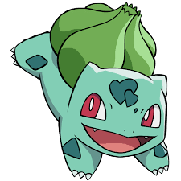
Bulbasaur
Nº: 001
Tipo: Planta / Venenoso
Peso: 6,9 kg
Altura: 0,7 m
Pokemon Bulbo:
Ele carrega uma semente nas costas desde o nascimento.
Conforme seu corpo cresce, a semente também cresce. -
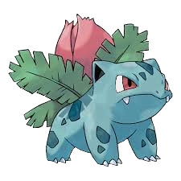
Ivysaur
Nº: 002
Tipo: Planta / Venenoso
Peso: 13 kg
Altura: 1 m
Pokemon Bulbo:
Quanto mais luz solar Ivysaur recebe, mais força brota dentro dele,
permitindo que o broto em suas costas cresça mais. -
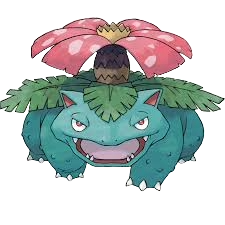
Venusaur
Nº: 003
Tipo: Planta / Venenoso
Peso: 100 kg
Altura: 2 m
Pokemon Bulbo:
Enquanto se aquece no sol, ele pode converter a luz em energia.
Como resultado, ele é mais potente no verão. -

Mega Venusaur
Nº: 003
Tipo: Planta / Venenoso
Peso: 155,5 kg
Altura: 2,4 m
Pokemon Bulbo:
Depois de um dia chuvoso, a flor em suas costas tem um
cheiro mais forte. O cheiro atrai outros Pokémon. -

Gigantamax Venusaur
Nº: 003
Tipo: Planta / Venenoso
Peso: ??? kg
Altura: ??? m
Pokemon Bulbo:
Grandes quantidades de pólen irrompem dele com a força de uma
erupção vulcânica. Inalar muito pólen pode causar desmaios. -
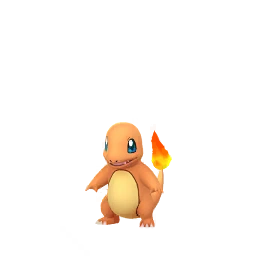
Charmander
Nº: 004
Tipo: Fogo
Peso: 8,5 kg
Altura: 0,6 m
Pokemon Lagarto:
A chama que arde na ponta da cauda é uma indicação das
suas emoções. A chama vacila quando Charmander está desfrutando
de si mesmo. Se o Pokémon fica furioso, a chama queima ferozmente. -
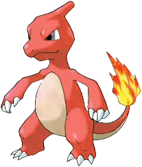
Charmeleon
Nº: 005
Tipo: Fogo
Peso: 19 kg
Altura: 1,1 m
Pokemon Chamas:
Charmeleon impiedosamente destrói seus inimigos usando suas garras
afiadas. Se ele encontrar um adversário forte, verifica-se agressivo.
Neste estado animado, a chama na ponta da cauda se inflama com uma cor branca azulada. -

Mega Charizard X
Nº: 006
Tipo: Fogo / Dragão
Peso: 100,7 kg
Altura: 1,7 m
Pokemon Chamas:
O poder avassalador que preenche todo o seu corpo faz
com que ele fique preto e crie intensas chamas azuis. -

Mega Charizard Y
Nº: 006
Tipo: Fogo / Voador
Peso: 100,5 kg
Altura: 1,7 m
Pokemon Chamas:
Seu vínculo com seu Trainer é a fonte de seu poder.
Ele ostenta velocidade e manobrabilidade maiores
que as de um caça a jato.
-

Charizard
Nº: 006
Tipo: Fogo / Voador
Peso: ??? kg
Altura: ??? m
Pokemon Chamas:
A chama dentro de seu corpo queima mais quente
que 3.600 graus Fahrenheit. Quando Charizard
ruge, essa temperatura sobe ainda mais.
-
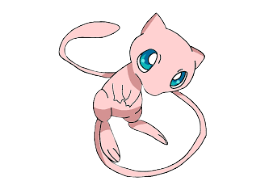
Charizard
Nº: 151
Tipo: Psíquico
Peso: 90,5 kg
Altura: 1,7 m
Pokemon Nova Espécie:
Dizem que Mew possui o DNA de todos os Pokémon.
Ele pode ficar invisível sempre que quiser, por isso
passa despercebido sempre que alguém se aproxima dele. -
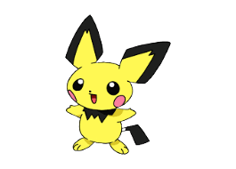
Pichu Tipo: Eletrico
Peso: 2,0Kg Altura: 0,3m
Pokémon pequeno rato
Pichu carrega sua eletricidade com mais facilidade em
dias de trovoada ou quando o ar está muito seco.
Você pode ouvir o estalar da eletricidade estática saindo deste Pokémon. -
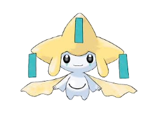
Jirachi Tipo: Metal e Psíquico
Peso: 1.1Kg Altura: 0,3m
Pokémon desejo
Uma lenda afirma que Jirachi realizará qualquer desejo escrito
em notas presas à sua cabeça quando acordar. Se este Pokémon sentir
perigo, ele lutará sem acordar. -
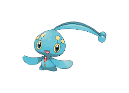
Manaphy Tipo: Água
Peso: 1,4Kg Altura: 0,3m
Pokémon Navegação marítima
Ele começa sua vida com um poder maravilhoso que lhe permite se relacionar
com qualquer tipo de Pokémon. -
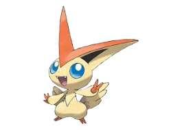
Victini Tipo:Fogo e Psíquico
Peso: 4Kg Altura: 0,4m
Pokémon Vitoria
Ao compartilhar a energia infinita que cria, todo o corpo desse ser
transbordará de poder. -
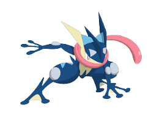
Greninja Tipo: Água e Escuridão
Peso: 40.0kg Altura: 1,5m
Pokémon ninja
Greninja se move com a velocidade e graça de um ninja,
usando movimentos rápidos para confundir seus inimigos enquanto
os corta com estrelas ninja feitas de água comprimida;
essas estrelas ninja são afiadas o suficiente para partir metal -
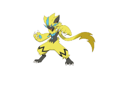
Zeraora Tipo: Eletrico
Peso: 44,5kg Altura: 1,5m
Pokémon trovoada
Ele eletrifica suas garras e destroi seus oponentes com elas.
Mesmo que eles desviem do ataque, serão eletrocutados pelas faíscas voadoras -
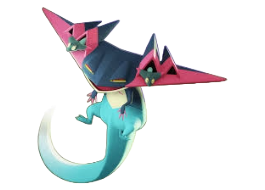
Dragapult Tipo: Dragão e Fantasma
Peso: 50Kg Altura: 3m
Pokémon furtivo
Quando não está lutando, mantém Dreepy nos buracos de seus chifres.
Assim que a luta começa, ele lança os Dreepy como mísseis supersônicos. -


Basculegion Tipo: Água e Fantasma
Peso: 110Kg Altura: 3m
Pokémon peixe grande
Este Pokémon está escondido nas almas de seus companheiros que
pereceram durante uma jornada punitiva até o rio onde nasceram.Basculegion Tipo: Água e Fantasma
Peso: 110Kg Altura: 3m
Pokémon peixe grande
Ela pode afligir um alvo com ilusões aterrorizantes que estão sob
seu controle. Quanto mais profunda a tristeza nas almas de seus
amigos, mais pálido Basculegion se torna. -


Forma Curly: Este é um pequeno Pokémon dragão.
Vive dentro da foz do Dondozo para se proteger dos inimigos externos.Forma Droopy: As diferentes cores e padrões desta espécie
são aparentemente o resultado da mudança de Tatsugiri para se
adequar às preferências da presa que atrai.Forma Stretchy: Pokémon pássaros são suas principais presas.
Pokémon sabe que é fraco, por isso caça com um parceiro.
Terminae a padronização apartir daqui